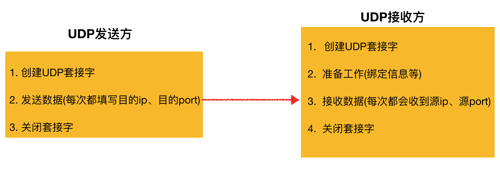
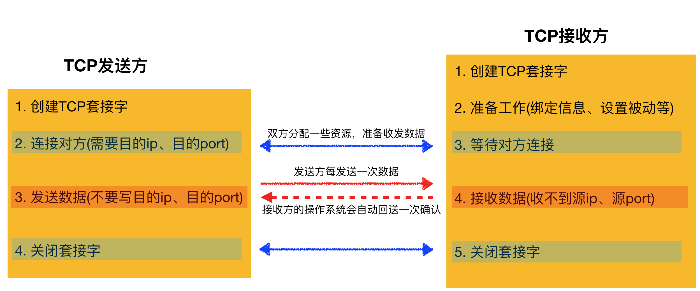

TCP简介
1. 引入
使用UDP发送数据容易丢失，而TCP能够保证数据稳定传送，所以更多时候用的是TCP，例如浏览器底层实现就是用的TCP
2. TCP介绍
TCP协议，传输控制协议（英语：Transmission Control Protocol，缩写为 TCP）是一种面向连接的、可靠的传输通信协议
3. TCP作用
通过TCP协议，能够更加稳定的将数据传递到目的地
4. 通俗理解TCP
4.1 先理解UDP
用一个收发信件的方式来理解
特点：
- 每封信件都要写 收件人的信息以及邮编等
- 发件人发送之后，收件人不需要一直等待，即在收到信之前，收件人可以做其他的事情
- 消息通过信件传送，丢失的可能性较高
最明显的一点：简单，但不稳定

说明：
- UDP发送数据时，只要明确对方的ip、port就能够将数据直接发送过去
- 当接收方收到数据之后，可以直接进行处理，不需要告知发送方数据已收到
4.2 再理解TCP
用一个打电话的方式来理解
打电话时，需要先拨号，然后再发送数据，而且有个特点，当你说了一句话之后 如果对方没有反应 你可能会问一问对方是否听到了你刚刚所说的话，等沟通结束后 双方挂断电话
特点：
- 先拨号，再说话、听
- 在电话沟通的过程中，不能与其他的人打电话
- 消息通过信件传送，丢失的可能性小
最明显的一点：复杂，但稳定

- TCP发送方首先要与TCP接收方之间建立连接（双方互相打招呼，分配好资源等）
- TCP发送方发送数据时，只需要填写数据内容即可，不需要再写目的ip、port等，因为之前的“连接”已经做好了准备
- TCP接收方收到数据之后，接收方的操作系统会自动回送一个“确实收到”的消息给发送方，这样做的目的是让发送方知道刚刚发送的数据对方已经成功的接收到
- 当数据收发完毕，双方再次互相打招呼，将各自的资源释放
5. TCP特点
5.1 面向连接
通信双方必须先建立连接才能进行数据的传输，双方都必须为该连接分配必要的系统资源，以管理连接的状态和连接上的传输。
双方间的数据传输都可以通过这一个连接进行。
完成数据交换后，双方必须断开此连接，以释放系统资源。
这种连接是一对一的，因此TCP不适用于广播的应用程序，基于广播的应用程序请使用UDP协议。
5.2 可靠传输
1）TCP采用“发送-应答”机制
TCP发送的每个数据都必须得到接收方的应答才认为这个TCP数据传输成功
2）超时重传
发送端发出一个数据之后就启动定时器，如果在定时时间内没有收到应答就重新发送这个数据。
TCP为了保证不发生丢数据，就给每个数据一个序号，同时序号也保证了传送到接收端实体的包的按序接收。然后接收端实体对已成功收到的数据发回一个相应的确认（ACK）；如果发送端实体在合理的往返时延（RTT）内未收到确认，那么对应的数据就被假设为已丢失将会被进行重传。
3）错误校验
TCP用校验和函数来检验数据是否有错误；在发送和接收时都要计算校验和。
4) 流量控制和阻塞管理
流量控制用来避免主机发送得过快而使接收方来不及完全收下。
6. TCP与UDP的不同点
- 面向连接（确认有创建三方交握，连接已创建才作传输。）
- 有序数据传输
- 重发丢失的数据包
- 舍弃重复的数据包
- 无差错的数据传输
- 阻塞/流量控制